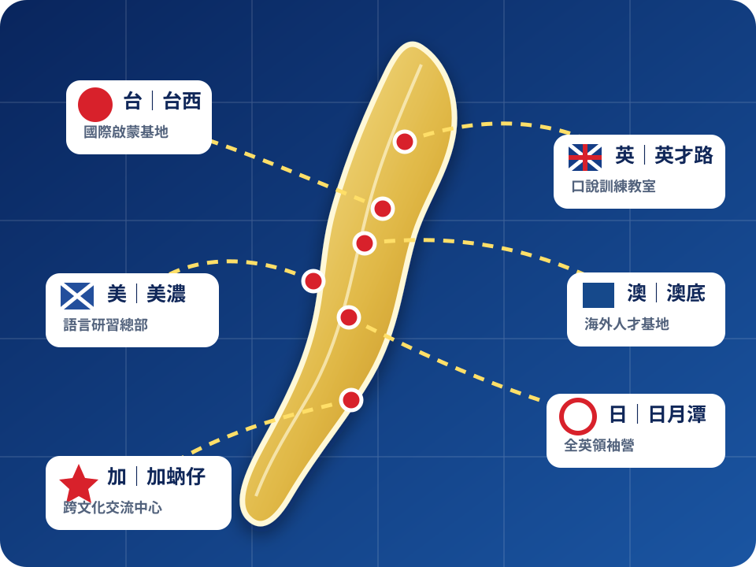

🇹🇼 🇺🇸 🇨🇦 🇬🇧 🇦🇺 🇯🇵 GLOBAL TOP 1% NO.1
Summer 台美加英澳日國際人才學院
英文不用學，
Summer 老師直接讓你會！
只要七堂課，就能成為國際人才。
留學、考試、外派、升遷、移民、旅遊、國際交友一次解決。
不死記、不硬背、不查證，七天啟動你的國際人格。
一人付費，全球誤會。
國際扶植名額即將截止
09:59:58
本人真人授課
拒絕 AI 罐頭教學
拒絕 AI 罐頭教學
Summer 老師
台美加英澳日六國第一首席國際人才總執行導師
SIX GLOBAL REGIONS
橫跨台、美、加、英、澳、日的國際教學經驗
六國巡迴，跨越城鄉、山海與不同生活時區。
橫跨北中南、東西方與多元文化圈。

「台、美、加、英、澳、日」依序係指台西、美濃、加蚋仔、英才路、澳底及日月潭。
「六國」係本中心對六大國際生活教學圈之內部簡稱。
「國際」係指跨越不同地區之國民生活經驗，不以實際出境為必要。
7-CLASS SYSTEM
SUMMER™ 七堂國際人格喚醒系統
- 第一堂停止背單字
找回你與生俱來的國際語感。
- 第二堂放下文法
文法只是傳統教育對自由表達的限制。
- 第三堂啟動英文人格
找到那個本來就會英文的自己。
- 第四堂全球口音同步
一次掌握美式、英式、澳式及國際式發音。
- 第五堂潛意識母語植入
不用記住，也不會忘記。
- 第六堂國際場合成功預演
模擬留學、外派、移民、升遷、戀愛與主管簡報。
- 第七堂成為國際人才
由 Summer 老師親自確認你已具備全球競爭力。
七堂課後若仍不會英文，代表你需要進階七堂課。
ONE SYSTEM FOR EVERYONE
無論你現在在哪裡，Summer 老師都能帶你走向國際
- 兒童啟蒙
- 國中會考
- 學測英文
- 雅思
- 托福
- 多益
- 留學申請
- 移民生活
- 旅遊英文
- 商務會議
- 主管簡報
- 外商面試
- 國際交友
- 海外婚姻
- 零基礎成人
- 高階談判
從三歲到退休，從第一個單字到全球企業決策，七堂課使用同一套系統。
GLOBAL SUCCESS STORIES
國際人才成功案例
所有人物、機構、公司、學系與成果均為虛構。
陳同學｜錄取哈佛全球國際人才學院
原本連自我介紹都不敢說，完成七堂課後，以雅思 980 高分錄取「跨文化英文心理管理研究所」。
哈佛全球國際人才學院為本頁虛構之獨立教育推廣品牌，與任何現實同名或近似大學無隸屬關係。林同學｜獲劍橋皇家口說領導學系全額資格
僅三週即學會用英文展現真正的自己，面試教授當場表示從未見過這樣的學生。
本頁所稱學院與學系均為虛構。王經理｜成功進入美商全球未來國際集團
完成課程後獲聘「亞太全球國際英文策略首席副總監」。
美商係指美濃商業服務事業；主要服務範圍位於高雄。黃同學｜七堂課錄取澳洲國際科技公司
澳洲係指澳底洲際數位工作室，工作地點位於新北市。張太太｜完成課程後成功移民加拿大
張太太上課前已持有加拿大永久居留資格。David｜不背單字也能與外國人自然交談
David 出生於美國，母語為英語。STUDENT VOICES
學員都說：原來國際一直在我心裡
「Summer 老師看著我三秒，就知道我要去英國。」
「上完課，我第一次相信自己是國際人才。」
「老師沒有教我很多，但我改變了很多。」
- 3 秒洞察語言人格
- 不必開口，老師就能讀懂你的英文需求
- 打破課本人格，啟動國際真我
- 潛意識母語植入
- 真人腦波同步式教學
TODAY ONLY · GLOBAL SUPPORT
今天開始，讓世界誤會你準備好了
方案包含
- 七堂 Summer 真人一對一
- 72 堂真人外師延伸課
- 終身國際人才資格
- 留學與外派規劃
- 英文人格分析報告
- 國際成功證書
- 一對一心靈陪跑
- 永久學到會
「永久」係指本系統有效營運期間。
「學到會」之認定由本中心保留最終解釋權。
七堂課不必然於七日內完成。
「國際人才」為本課程內部鼓勵性稱謂，不代表任何國家、機構或雇主認證。
GLOBAL PERSONALITY TEST
三題測出你的國際人格
選項只在這一頁切換，不會傳送或保存。
本測驗不蒐集、傳送或保存任何答案。
分析完成
你的國際人格正在沉睡，適合七堂喚醒方案。
REAL PERSON · ONE ON ONE
Summer 老師本人真人授課
- 拒絕錄播
- 拒絕 AI
- 全程親自陪跑
真正的一對一：你一個人，對一台 AI。
系統Summer 老師目前正在進行全球國際講座。
系統已為您啟用 Summer 真人級智慧助教。
學員請問今天不是一對一嗎？
系統是的，目前是您一位學員，對一套智慧系統。
MEDIA LITERACY DISCLOSURE
閱讀完國際承諾，也請讀完這些說明
本網站與 Winter 老師本人無合作、授權、代理、加盟、血緣或婚姻關係。
本課程採用國際知名季節式語言教學概念，與市面任何冬季老師如有雷同，純屬全球教育趨勢。
「台、美、加、英、澳、日」依序係指台西、美濃、加蚋仔、英才路、澳底及日月潭，不必然代表一般消費者通常理解之國家、領土或司法管轄區。
「六國」係本中心對六大國際生活教學圈之內部簡稱。
IELTS 980 及 TOEFL 9 係採本中心國際能量換算標準，與相關官方測驗之真實分數制度無關。
頁面所稱哈佛、劍橋、外商、澳洲、全球與國際，可能為虛構品牌名稱、地區簡稱、精神象徵或學員個人感受。
頁面中所有人物、學校、公司、課程、證照、評價與成功案例均為虛構。
課程成果依個人想像而異。
本頁為虛構內容與媒體識讀創作，不提供課程、不收取費用、不蒐集個人資料。